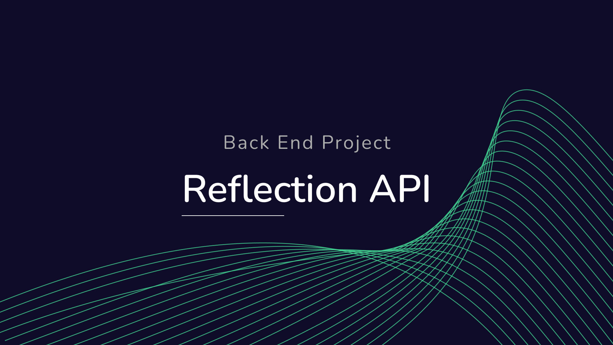

Description
MyGram application is a back end application that aims to store photos, make comments on other people's photos like social media.
Requirements
- This project uses Sequelize ORM with Postgresql database.
- MyGram uses libraries/packages including jsonwebtoken, bcypt, dotenv, express, sequelize, sequelize-cli, and pg.
- Each user can only CRUD (Create, Read, Update, Delete) their own reflection data.
Endpoint Rest API
- Endpoint for user registration POST /api/v1/users/register
- Endpoint for user login process POST /api/v1/users/login
- Endpoint for users to create reflection data POST /api/v1/reflections
- Endpoint for users to get all their own reflection data GET /api/v1/reflections
- Endpoint for users to update all their own reflection data PUT /api/v1/reflections/:userId
- Endpoint for users to delete all their own reflection data DELETE /api/v1/reflections/:userId